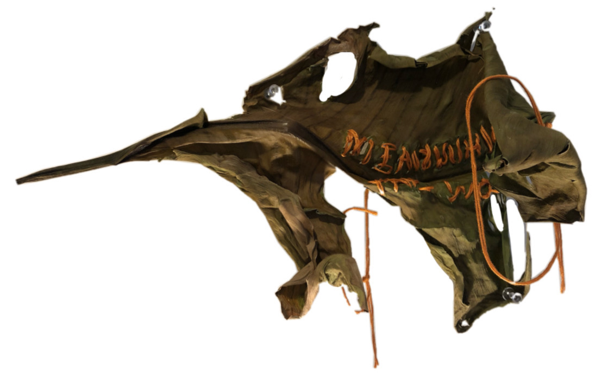
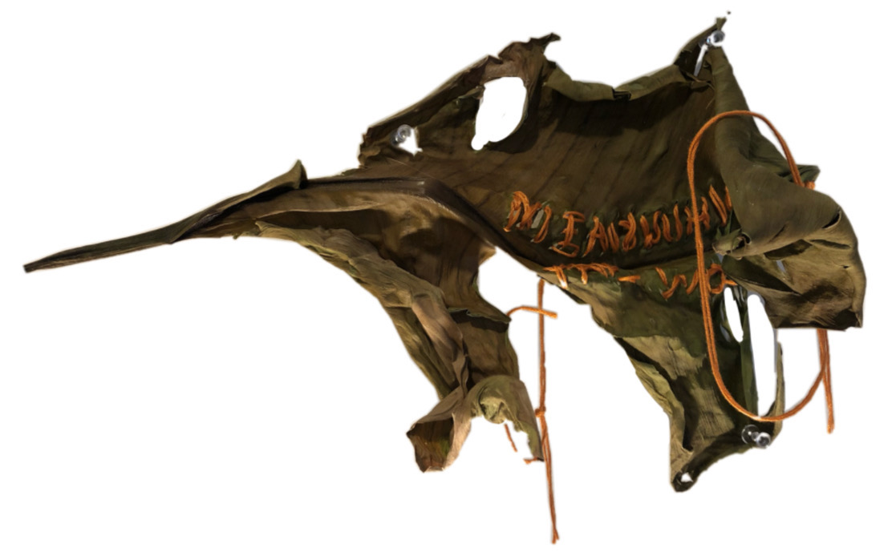

To forage is to explore and gather that which supports and sustains you, without depleting the nuanced systems that provide them. In Metaforaging, a language art workshop taught by Florence Wallis, we moved through multi-disciplinary practices to understand how our worlds interrelate and how our senses extend and entangle each other. I wrote the following poems for this workshop as I foraged for experiences and objects in my environment, drawing materials from personal and natural sources. The images are an experimental observation of decay.
Materials: plant leaves (strelitzia, epipremnum, philodendron, monstera), fabric, thread; constructed via hand-stitching and machine-stitching.


 
